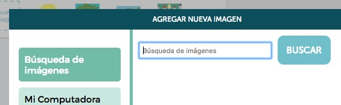
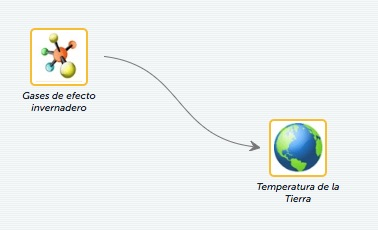
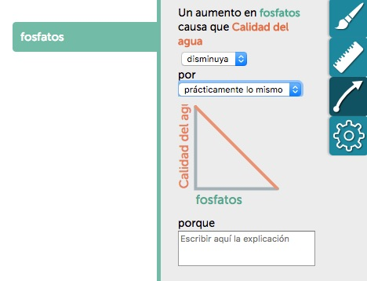
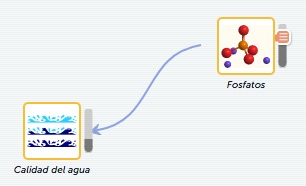
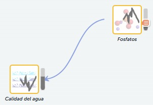

Intro rápida a SageModeler
Seguir las instrucciones de abajo o mirar un video instructivo corto para aprender cómo crear su propio modelo.

Nota: ¡Este software está en desarrollo! Por favor, si encuentran errores repórtenlos aquí. ¡Gracias!
Crear un diagrama
Piensen qué es lo que quieren modelizar. Tal vez estén pensando en los factores involucrados en el cambio climático o las variables que afectan la calidad de agua de un río, laguna, lago o arroyo cercano. ¿Quieren diagramar su comprensión sobre una relación predador-presa?
¿Qué imágenes querrían incluir en su modelo? (Pista: Si es algo demasiado abstracto, usen el ícono de la cajita azul.)
- Hagan clic en el ícono “Nueva imagen” en la parte superior izquierda de SageModeler o arrastren el ícono al espacio de trabajo.
- Busquen una imagen usando la caja de Búsqueda de imágenes (que busca imágenes de dominio público alojadas en openclipart.org).
 - Una vez que hayan encontrado la imagen, hagan clic en click Agregar imagen para agregarla a su paleta de imágenes. Podrán reutilizar esta imagen cuantas veces quieran en su diagrama y quedará grabada en su archivo cuando lo guarden, es decir, si hoy cierran el archivo y lo abren mañana para seguir trabajando, no tendrán necesidad de buscar nuevamente la imagen ya que permanecerá ahí aunque no la hayan usado en su diagrama.
- Busquen otra imagen o cierren la ventana de “Agregar nueva imagen”.
- Ahora arrastren la imagen desde su paleta al espacio de trabajo donde construirán el diagrama.
Agregar conexiones
Una vez que hayan agregado imágenes a su espacio de trabajo, conecten dichas imágenes entre sí con enlaces para mostrar qué variables/factores afectan a las demás variables o factores. Seleccionen una imagen, hagan clic en la flecha, y arrástrenla hasta la otra imagen, luego suelten.

Crear relaciones
Ya agregaron imágenes y enlaces – ¡bien! Ahora, definan relaciones cliqueando en la variable/factor (imagen) hasta que quede marcada con un recuadro, y luego hagan clic sobre el ícono de la flecha que aparece en el inspector de relaciones. Por un momento piensen qué le sucedería a la temperatura de la Tierra si aumentaran los gases de efecto invernadero (GEI), o qué sucedería con la calidad del agua si hubiera un incremento en los fosfatos.

Simular su modelo
Después de que hayan configurado todas las relaciones, es momento de ejecutar la simulación de nuestro modelo y recolectar los datos que surjan de esa ejecución. Esto es lo que llamamos realizar un experimento.
Hagan clic en la flecha de simular ubicada en la parte superior derecha de la ventana, lo cual iniciará la simulación del modelo, y expandan para que se muestren las opciones de registro de datos. Ahroa pueden ajustar las variables de su modelo a través de los deslizadores (una especie de manijitas).
Se pueden mostrar mini-gráficos de esos cambios haciendo clic en el ícono de la rueda dentada y habilitándolo en la configuración de la simulación.

Se puede registrar un dato o el flujo (conjunto) de datos que les permitirá registrar todas las variables a medida que realizan cambios en tiempo real. Es recomendable aumentar el contador del experimento cada vez que queiran explorar el impacto de una nueva variable.
Agregar gráfico haciendo clic en el ícono en la parte superior izquierda del panel.
Configurar el gráfico arrastrando los encabezados de la tabla a los ejes del gráfico o haciendo clic en los ejes del gráfico para configurar las variables.
Explorar sus datos
Como SageModeler está embebido dentro de CODAP, se pueden explorar los datos con tablas, gráficos, etc. Pueden mirar los videos de ayuda de CODAP.